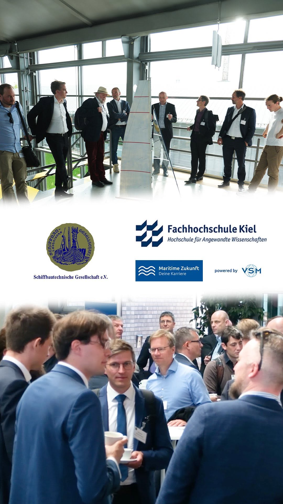
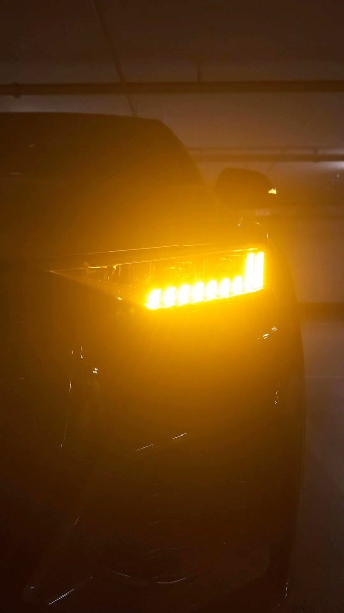
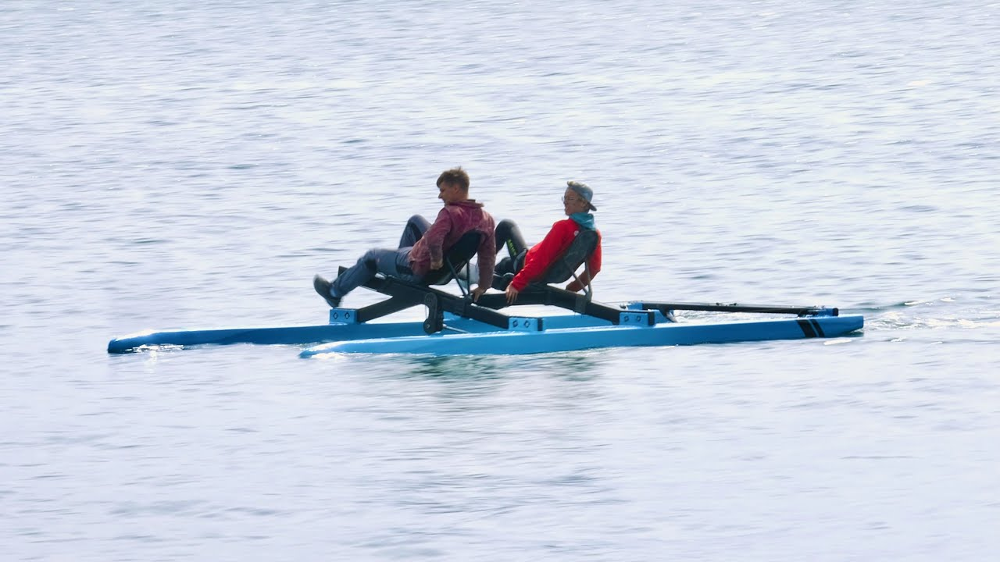

Ein Tag mit Minister Claus Ruhe Madsen

International Waterbike Regatta 2023 Kiel
Kamera & Schnitt bei: VSM Sommerfest

Krängungsversuch der MS Stadt Kiel

Kieler Woche 2024 - Social Media Video

Schiffbautechnische Gesellschaft Sprechtag
Fjord Kayaking Touren

UCA Kiel - Schiffsumladung

Bednarekdoyesailing - Wettkampfvorbereitung

Audi RSQ8 - Spec Ad
Elke Beer - Saxophonistin und Instrumentalpädagogin

Die Stein-Erfinder: Der Weg zum Stein

Förderacer in Action
Kameraassistenz bei: Das Philharmonische Orchester Kiel